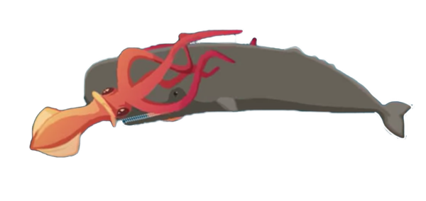

1,640 feet: Max depth of whales where they hunt giant squid.

Just how deep does the ocean go? If you took the highest point on land and then submerged it, you would still have more than a mile between you and the deepest point in the oceans. The oceans harbor 99% of all living space on Earth and have enough water to fill a bathtub that's 685 miles long, on each side. The purpose of this site is to show examples and facts about what lies beneath. As you scroll down the page, the number of feet shows an interesting fact and how deep that fact lies.